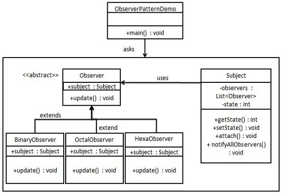

Observer Pattern
The Observer pattern is a behavioral design pattern that defines a one-to-many dependency relationship. When an object's state changes, all its dependents are notified and update automatically.
When there is a one-to-many relationship between objects, use the Observer Pattern. For example, when an object is modified, it automatically notifies the objects that depend on it. The Observer Pattern is a behavioral pattern.
Introduction
intent
It creates a one-to-many dependency relationship between objects. When one object's state changes, all objects that depend on it are notified and update automatically.
Main problem addressed
- The Observer Pattern solves the problem of how to automatically notify other dependent objects when an object's state changes, while maintaining low coupling and high collaboration between objects.
Use Case
- When a change in one object's state needs to update other objects at the same time.
Implementation Approach
- Define the observer interface: Contains an update method.
- Create concrete observersImplements the observer interface and defines the behavior when receiving a notification.
- Define the subject interfaceContains methods for adding, removing, and notifying observers.
- Create the concrete subject: Implement the subject interface, manage the observer list, and notify observers when the state changes.
Key code
- Observer list: Maintain a list of observers in the subject.
Application example
- Auction System: The auctioneer acts as the subject, bidders act as observers, and all bidders are notified when the auction price updates.
- Journey to the West storyThe Bodhisattva sprinkling water serves as the state change, and the old turtle serves as the observer, observing this change.
Advantages
- Abstract Coupling: There is abstract coupling between observers and the subject.
- Trigger MechanismEstablishes a trigger and notification mechanism for state changes.
Disadvantages
- Performance issuesIf there are many observers, the notification process may be time-consuming.
- Circular DependencyIt may lead to circular calls and system crashes.
- Lack of change details: Observers do not know how the subject changes, only that a change has occurred.
Usage suggestions
- Use it when you need to reduce coupling between objects and when object state changes need to trigger other object changes.
- Consider using Java's built-in observer pattern support classes, such as
java.util.Observableandjava.util.Observer。
Notes
- Avoid circular references: Be careful about the dependency between observers and the subject to avoid circular references.
- Asynchronous ExecutionConsider using asynchronous notification to avoid a single point of failure causing the entire system to stall.
Structure
The Observer Pattern includes the following core roles:
- Subject: Also known as the observed or observable, it is an object with state and maintains a list of observers. The subject provides methods for adding, removing, and notifying observers.
- Observer: An observer is an object that receives notifications from the subject. It needs to implement an update method, which is called to perform update operations when a notification is received from the subject.
- Concrete Subject: A concrete subject is a concrete implementation class of the subject. It maintains the observer list and notifies observers when the state changes.
- Concrete Observer: A concrete observer is a concrete implementation class of the observer. It implements the update method and defines the specific operations to perform when receiving a notification from the subject.
The Observer pattern decouples the subject and observers to achieve loose coupling between objects. When the subject's state changes, all observers that depend on it receive notifications and update accordingly.
Implementation
The Observer Pattern uses three classes: Subject, Observer, and Client. The Subject object has methods for binding observers to the Client object and unbinding observers from the Client object. We createSubjectclass,ObserverAn abstract class and classes that extend the abstract classObserverentity class.
ObserverPatternDemo, our demo class usesSubjectand entity class objects to demonstrate the Observer Pattern.

Step 1
Create the Subject class.
Subject.java
Step 2
Create the Observer class.
Observer.java
Step 3
to create entity observer classes.
BinaryObserver.java
OctalObserver.java
HexaObserver.java
Step 4
UsageSubjectand entity observer objects.
ObserverPatternDemo.java
Step 5
Run the program and output the results:
First state change: 15 Hex String: F Octal String: 17 Binary String: 1111 Second state change: 10 Hex String: A Octal String: 12 Binary String: 1010other extensions